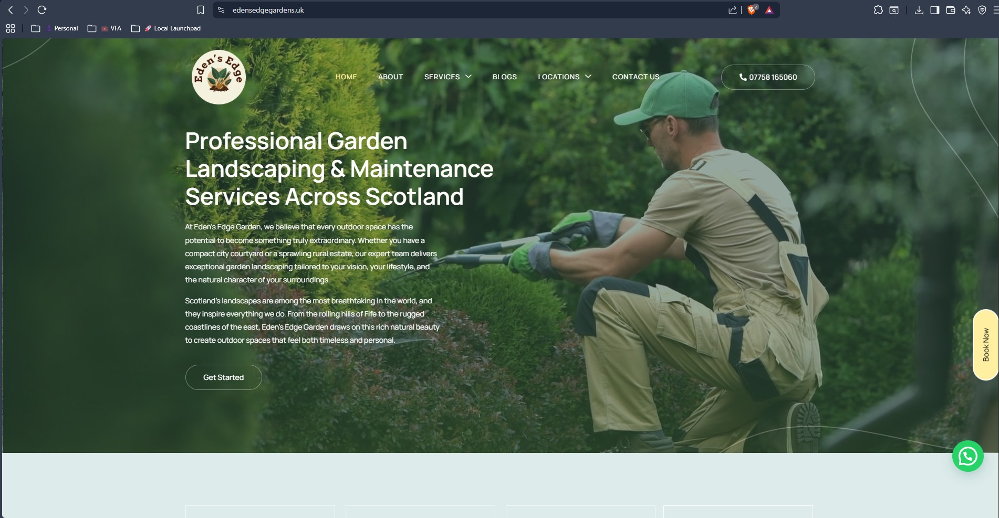
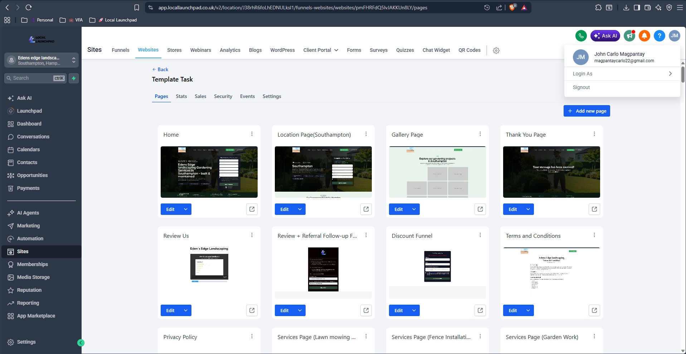
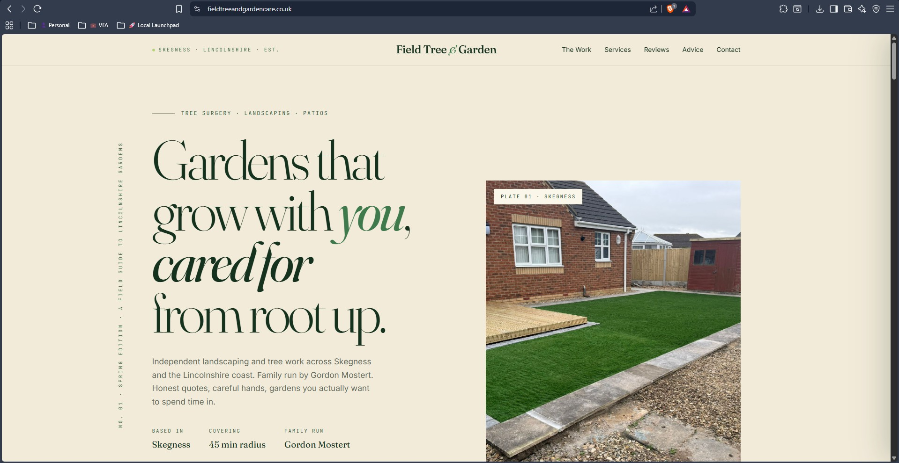
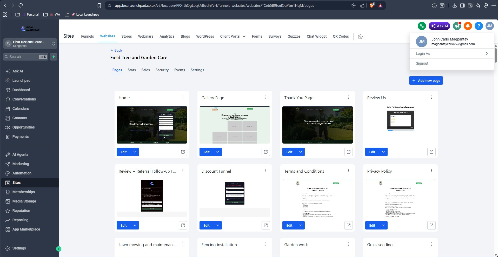
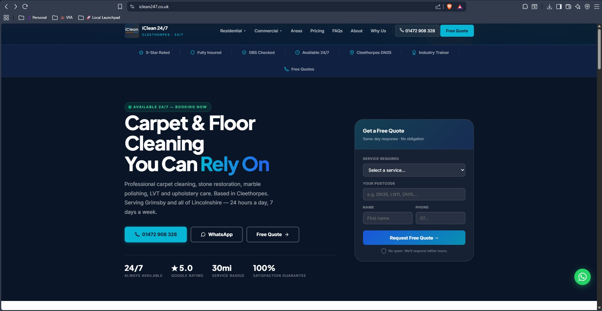
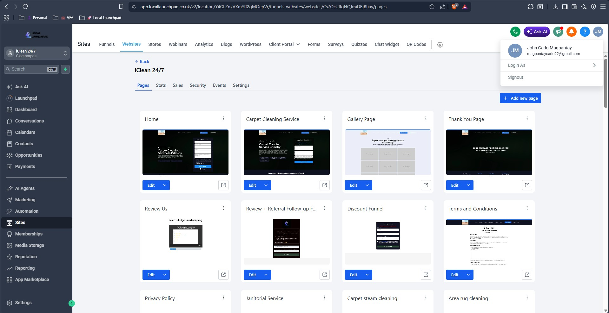

Local Launchpad – Website Image & Asset Specialist
Local Launchpad – Website Image & Asset Specialist
Multi-client website image and asset management within Local Launchpad's website production workflow.
Project Overview
This project represents my work as a Website Image & Asset Specialist at Local Launchpad. The engagement began during the first week of June 2026 and was completed during the first week of July 2026.
My contribution focused exclusively on website image and asset support. I did not design, develop, own, or manage the supported websites.
Client Websites Supported
These client websites were delivered under Local Launchpad's website production workflow. My responsibilities remained consistent across them and were limited to website image and asset support.
Business Context
The objective of this work was to support Local Launchpad's website delivery process by sourcing, preparing, optimizing, and organizing high-quality visual assets for multiple client websites built using GoHighLevel.
Each client website required visuals that matched the client's branding, services, and target audience while maintaining consistency throughout the website.
My contribution focused exclusively on website image and asset support.
My Role
I worked as a Website Image & Asset Specialist . My responsibilities were limited to visual asset work:
- Selecting and sourcing high-quality website images
- Sourcing suitable royalty-free assets from approved libraries
- Preparing and optimizing website images
- Creating supporting graphics in Canva when needed
- Uploading and organizing assets in GoHighLevel
- Maintaining visual consistency across website pages
- Supporting the website's visual presentation
Technologies & Tools Used
Platforms
- GoHighLevel
- Asana
- Google Workspace
Creative & Asset Sources
- Envato Elements
- Unsplash
- Pexels
- Canva
- Squoosh
Skills Applied
- Image sourcing
- Image optimization
- Asset preparation
- Asset management
- Visual consistency
- Website content support
- Graphic preparation
Technical Implementation
The typical workflow accurately reflected my assigned website image and asset responsibilities:
- Receive website task assignments through Asana.
- Review page content and image requirements.
- Source suitable royalty-free assets from Envato Elements, Unsplash, and Pexels.
- Prepare supporting graphics using Canva when needed.
- Optimize images using Squoosh.
- Upload and organize assets within GoHighLevel.
- Review visual consistency across all website pages.
- Collaborate through Google Workspace and complete assigned tasks.
Challenges & Obstacles
One recurring challenge was that some businesses had very limited original photography available.
To maintain a professional presentation, I sourced high-quality royalty-free images from approved asset libraries while ensuring they accurately represented each client's services.
Another challenge was maintaining visual consistency across multiple pages while preparing assets for different industries and business types.
Results & Business Impact
No project metrics, SEO data, website performance data, or business outcomes are included in this case study. The documented contribution is limited to website image and asset support.
Asset Workflow
- Asana task assignment
- Page-content and image-requirements review
- Asset sourcing and Canva graphic preparation
- Squoosh image optimization
- GoHighLevel upload and organization
- Visual consistency review and task completion
Project Screenshots & Visuals
TODO: Replace these placeholders with approved website screenshots or visual examples after confirming publication permission.






Ongoing Support & Maintenance
Following the initial website delivery, ongoing website image and asset support remained available through GoHighLevel.
When clients requested updated images, replacement visuals, or additional assets, changes could be implemented while maintaining consistency with the existing branding and website style.
Key Takeaways & Lessons Learned
Working across multiple client websites strengthened my ability to efficiently source, optimize, and organize website assets within a structured production workflow.
The experience also improved my understanding of website presentation, visual consistency, and collaboration using GoHighLevel, Asana, and Google Workspace.
Future Improvements
- Replace placeholder visuals with approved website screenshots.
- Include representative examples of optimized website assets where publication permission has been granted.
- Add additional Local Launchpad client websites as they are completed.
- Expand the workflow documentation as internal standards evolve.
Interested in working together?
Let's discuss how I can help with your next project.
Get In Touch View More Projects